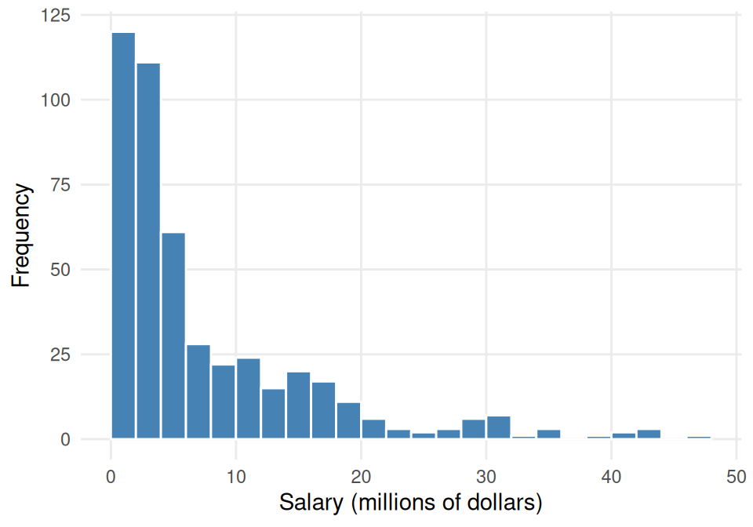
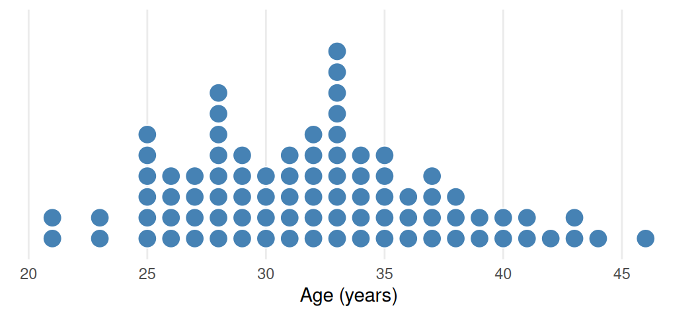

2.2 One Quantitative Variable: Shape, Center, Spread
Key Concepts
- Understand the difference between displays of categorical and quantitative data
- Use a dotplot or histogram to describe the shape of a distribution
- Calculate the mean and the median for a set of data values, with appropriate notation
- Identify the approximate locations of the mean and the median on a dotplot or histogram
- Explain how outliers and skewness affect the values for the mean and median
- Use technology to compute summary statistics for a quantitative variable
- Recognize the uses and meaning of the standard deviation
- Interpret a five number summary or percentiles
- Use the range, the interquartile range, and the standard deviation as measures of spread
- Describe the advantages and disadvantages of the different measures of spread
- Identify outliers in a dataset based on the IQR method
Describing quantitative data
A distribution is considered symmetric if we can fold the plot over a vertical center line and both sides match closely.
A distribution is considered skewed left if the longer tail of the distribution is to the left.
A distribution is considered skewed right if the longer tail of the distribution is to the right.
One of the easiest ways to describe a quantitative variable is to make a dot plot or a histogram and look at the shape and center of the distribution. In fact, one of the major differences between the summaries of categorical and quantitative variables is that for quantitative variables, we often care about the shape and center of the distribution. When we say a distribution is symmetric it means that the left-side of a distribution is very similar to the right-side of the distribution. We say a distribution is skewed left when the tail of the distribution is longer on the left. Similarly, we say that a distribution is skewed right when the tail of the distribution is longer on the right.
Class Example 2.2.1: NBA Salaries
The histogram in the figure below shows the distribution of player salaries (in millions of dollars) for a sample of 467 players during the 2022 National Basketball Association (NBA) season.
- Describe the shape of the distribution.
Measures of center: Mean and median
The mean of a data set is the sum of all its values divided by the number of observations.
The median of a dataset is the middle entry of an ordered list of data. If there are an even number of entries, then we take the average of the middle two values.
One type of numerical summaries you will see for a dataset is called measures of center. Measures of center, provide us with a single number that best describes a quantitative variable’s distribution. Essentially, they give us a guess of what a typical value would look like. There are two measures of center we will use in this class: the mean and median. The mean of a sample tells us the average. For a sample of observations\(x_1, x_2, \ldots, x_n\), the mean is given by \[ \text{Mean} = \frac{x_1 + x_2 + \cdots + x_n}{n} = \frac{\sum_{i=1}^n x_i}{ n } \] where \(n\)is the number of observations.
Notation:
\(\mu\): population mean
\(\overline{x}\): sample mean
In this course, we will use \(\mu\)to represent the population mean and \(\overline{x}\)to represent the sample mean.
The median, denoted \(m\), divides the sample into two groups of equal size. We find the median by following two steps:
- Sort the sample values.
- Find the middle value:
- If \(n\)is odd, the median is the middle value in the sorted list.
- If \(n\)is even, the median is the average (midpoint) of the middle two values in the ordered list.
Class Example 2.2.2: Ants on a sandwich
The number of ants climbing on a piece of a peanut butter sandwich left on the ground near an anthill for a few minutes was measured 7 different times, and the results are: 43, 59, 22, 25, 36, 47, 19
- Calculate the mean number of ants.
- Calculate the median number of ants.
- Suppose one of the sandwich bits was extremely appealing to the ants, and instead of 59, the number of ants for that bit was actually 159, giving the 7 values as: 43, 159, 22, 25, 36, 47, 19. Compute the mean and median for this new dataset.
- Which statistic (mean or median) is impacted most by the outlier?
Measures of spread: IQR, range
A measure of spread tells us how much variability exists in the data.
The IQR (Interquartile range) is the difference between the 1st and 3rd quartiles of the data.
In addition to measures of center, we also should report measures of spread. A measure of spread is a statistic that indicates the type of variability we see for a single variable. The IQR (interquartile range) is a statistic that tells us the range of the middle 50% of the dataset. To find the IQR, we need to first estimate\(Q_1\)and\(Q_3\), the first and third quartiles. To find\(Q_1\), we need to take the median of all the values below the median. To find\(Q_3\), we need to take the median of all the values above the median. The IQR is given by \[ IQR = Q_3 - Q_1. \]
The range is the difference between the maximum and minimum of the data.
To find the range of the data, you take the difference between the maximum and minimum of the data.
Class Example 2.2.3: Ants revisited
In the previous example, we found that for the 7 different times, the results were 19, 22, 25, 36, 43, 47, 59 (sorted in ascending order)
- Find the IQR for this data
- Find the range for this data
- Find the range and IQR if the value 59 was actually 159?
- Which statistic (range or IQR) is impacted most by the outlier
Measures of spread: Standard deviation
In addition to IQR, another commonly used measure of spread is the standard deviation.
The standard deviation of a variable is a rough estimate of the typical distance of a data value from the mean.
The standard deviation gives is an estimate for the average distance each observation is from the mean and is given by \[ \text{Standard deviation} = \sqrt{ \frac{ \sum_{i=1}^n (x_i - \overline{x})^2 }{ n - 1}}. \]
Notation:
\(\sigma\): population standard deviation
\(s\): sample standard deviation
In this course, we will use \(\sigma\)to represent the population standard deviation and \(s\)to represent the sample standard deviation. When the standard deviation is large, it means there is a lot of variability amongst the observations. When the standard deviation is small, it means there is a lot of consistency amongst the observations.
Class Example 2.2.4: Ants revisited
- Find the standard deviation of the ants on a sandwich data.
- Find the standard deviation of the data if the value 59 was actually 159.
- Why should we square the deviations before adding them up?
Outliers
An outlier is a data point that is unusual given the rest of the data.
A statistic is resistant if it is not impacted by outliers.
In the last part of the previous example, we introduced an outlier, or unusual value, into the dataset. We can use a simple rule of thumb to determine whether an observation is an outlier. A data value,\(x_0\), is considered to be an outlier if \[ x_0 < Q_1 - 1.5 (IQR) \quad \text{or} \quad x_0 > Q_3 + 1.5 (IQR). \] To pick an appropriate statistic to represent the data, we need to know if it will be impacted by outliers. We call a statistic resistant if it is not impacted by outliers.
Class Example 2.2.5: Resistant statistics
Look back at your answers to the questions about ants on a sandwich.
- Which measures of center (mean, median) are resistant?
- Which measures of spread (IQR, range, standard deviation) are resistant?
Estimating summary statistics from a graphical summary
We may not always have access to the full dataset to come up with the mean or median from a sample. Sometimes we need to estimate these values from a graphical summary. For symmetric data, the mean should be very close to the median. If the data are skewed left, then the mean will be less than the median. On the other hand, for skewed right data, the mean will be greater than the median.
Class Example 2.2.6: The Masters
The ages for all golfers who won The Masters from 1934 - 2023 is shown in the figure below. There are 87 champions (less than the number of years due to World War 2) represented in the dotplot.

- Use the dotplot to estimate the median age of a Masters Champion between 1934 and 2023.
- Should the mean age be lower than, about the same as, or higher than the median? Explain.
- Estimate the IQR of the age from all golfers.
Estimating standard deviation from a histogram
As a general rule, for symmetric and bell-shaped histograms, about 95% of the data should fall within two standard deviations from the mean. About 100% of the data should fall within three standard deviations from the mean.
Class Example 2.2.7: Percent of Body Fat in Men
The variable BodyFat in the BodyFat dataset gives the percent of weight made up of body fat for 100 men. For this sample,\(\overline{x} = 18.6\)and\(s = 8.0\). The distribution of body fat values is roughly symmetric and bell-shaped. Find an interval that is likely to contain approximately 95% of the data values.
Choosing the best summary statistics
When picking summary statistics to best represent the data, you should always consider the shape of your distribution. For symmetric and bell-shaped distributions, you should use mean and standard deviation to describe the center and spread of the data. If you have a distribution that is skewed, then you should use resistant statistics like median and IQR to describe the center and spread of the data.
Class Example 2.2.8: NBA Salaries revisited
Thinking back to the NBA salaries histogram.
- Which statistic, mean or median, would be most appropriate to represent a typical NBA salary? Why did you select that statistic?
- Which statistic, IQR or standard deviation, would be most appropriate to represent the spread of the distribution for NBA salaries? Why did you select that statistic?
Percentiles
The \(P^{th}\)percentile is the value of a quantitative variable which is greater than \(P\)percent of the data.
Most of you have seen a percentile at some point in the past. Perhaps it was given on the results of a standardized test, or maybe you have had an instructor who has given the median score for an exam or quiz. The \(P^{th}\)percentile tells us the value in the dataset that is larger than \(P\)percent of the data.
Class Example 2.2.9: Three important percentiles
We have already discussed three important percentiles in class. Use what you know about the following statistics to determine which percentile it represents.
- Q1
- Median
- Q3